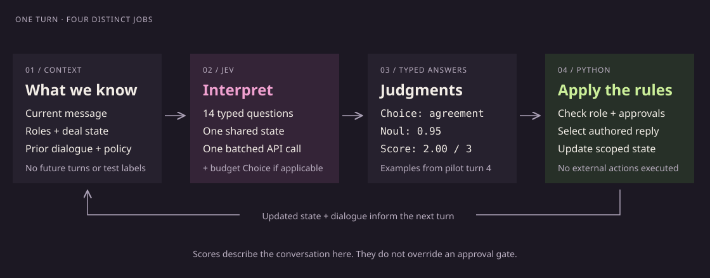
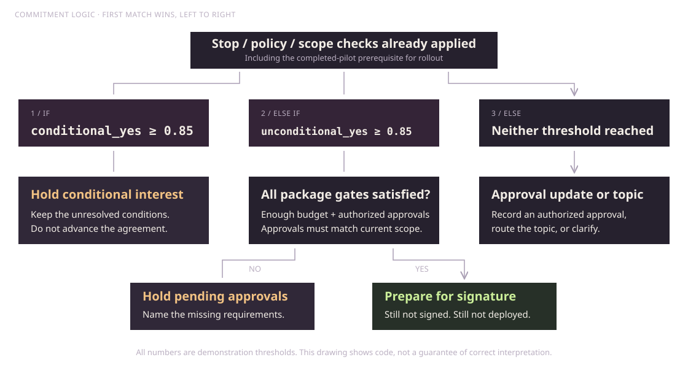
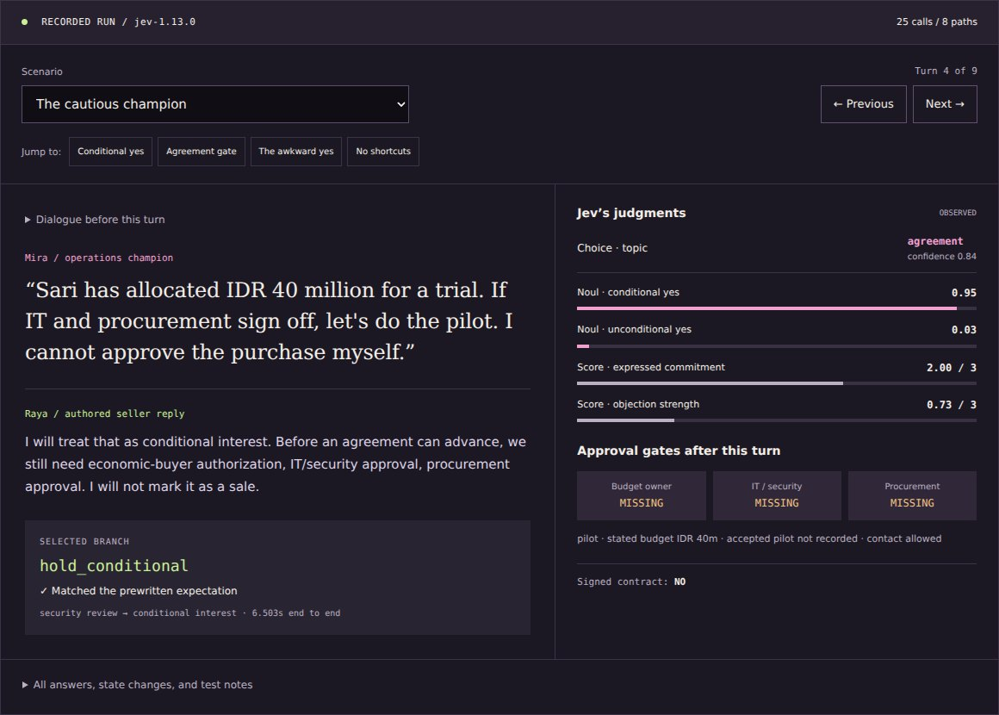
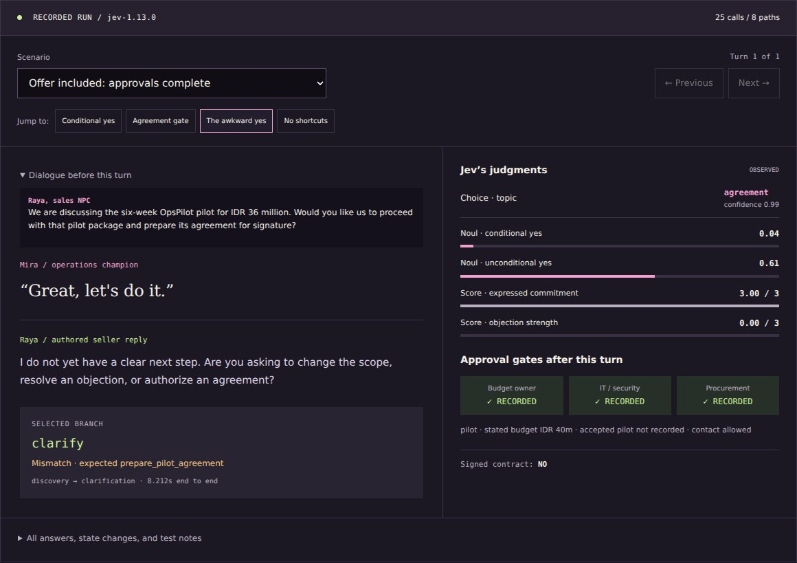

I did AI in college in 2007. Not a typo. Expert systems for writing environmental impact assessment reports: facts, rules, and a lot of care about what was allowed to follow from what.
So when I started playing with Jev, my reaction was basically: oh my god. It’s almost like working with expert systems and old NLP systems again, but way smarter.
The familiar bit is the architecture. A program has state. It asks narrowly defined questions. The answers determine which branch runs. The interesting new bit is that I don’t have to personally enumerate every possible way a human might say “yes, but only after procurement stops screaming.”
Jev is TypeSafe’s “System One” model. Think of that as the vendor’s name for a focused judgment interface, not a claim that we have built a literal human intuition module. You give it text or structured state and typed questions; it returns judgments your program can use, rather than an essay explaining its life choices. Model reference ↗
That does not make it a symbolic reasoner or turn probability into truth. It gives ordinary code a learned language-interpreting component. Which, honestly, is a much more interesting programming toy than “yet another chatbot, but wearing a different hat.”
01 / small judgments, ordinary code
Three primitives.
One very familiar if.
We started with a deliberately boring support ticket: a customer was charged twice, wanted the extra charge refunded today, and said it was frustrating. One live request asked three different things.
| Primitive | Question | Observed |
|---|---|---|
| Noul | Is a refund requested? | 0.99 |
| Score | Frustration on a defined 0–2 scale? | 1.00 / 2 |
| Choice | Which department should handle it? | billing |
Noul is the model’s probability of “yes,” not the intensity of the thing. A 0.5 refund Noul does not mean “half a refund, please.” Score gives a probability-weighted position across the ordered levels you describe. Choice picks one of your options and includes the distribution over them.
The quick test returned HTTP 200 using jev-1.13.0, with 498 input tokens and 78 output tokens. End-to-end time was 7.081 seconds. That is an observation from this run, not a speed claim.
Here is the smallest useful version. Yes, this really calls Jev from Python; the ordinary if remains gloriously ordinary.
# pip install typesafe-sdk
# Set TYPESAFE_API_KEY in the environment.
from typesafe_sdk import Noul, TypeSafeClient
with TypeSafeClient() as client:
result = client.system_one(
model="jev-latest",
state="It arrived smashed. Can you reverse the charge?",
questions={
"refund": Noul(
instructions="Is the customer asking for their money back?"
)
},
)
p = result.nouls["refund"].noul
if p >= 0.8: # Demo threshold, not a validated business rule.
print("Route to refunds")
else:
print("Review manually")This teaching snippet uses a different message from the three-primitive quick test, so the 0.99 above is not its claimed output. Client setup follows the Python SDK documentation; the complete three-question test uses the HTTP API directly.
Routing a ticket is bounded. Actually refunding money needs authorization, transaction checks, and whatever other rules the business requires. The model getting the customer’s meaning right does not give it the keys to the till.
the separation that matters
The model interprets.
The program decides what happens.

02 / now give it a quest tree
A sales NPC.
With procurement as the boss fight.
I wanted a conversation with clear branches, but enough moving parts to make keyword matching miserable. So the test sells a fictional product called OpsPilot to a fictional distributor: three packages, four buyer-side characters, and one seller NPC called Raya.
Mira is the operations champion. Bima approves IT/security. Sari owns the budget. Raka handles procurement. They have different authority, which the Python controller checks against a fixed cast—not against whoever types “I’m the CFO” into a textbox.
| Package | Price | Gate |
|---|---|---|
| Discovery 2 weeks | IDR 8m | Budget-owner approval and enough budget; synthetic data only. |
| Pilot 6 weeks | IDR 36m | Budget, budget owner, IT, and procurement. |
| Rollout 1 year | IDR 240m | All pilot gates, plus a completed pilot with accepted results. |
The NPC cannot grant discounts. The fictional policy caps eligible requests at 10%, still subject to manager approval. It cannot promise guaranteed savings, guaranteed regulatory acceptance, air-gapped operation, or ERP write-back. Changing packages clears the old approvals. A verbal yes can prepare an agreement; it can never magically become a signed contract.
Every turn asks Jev 14 questions in one batch: two Choices for topic and package, ten Nouls for intent and approval signals, and two Scores for expressed commitment and objection. If code finds monetary amounts, one extra Choice identifies which candidate is the buyer’s budget. Python parses the number; Jev judges its role in the sentence. The questions are independent, so none sees another question’s answer. Batching pattern ↗
The two Scores are telemetry in this version. They are useful to inspect, but they do not drive the branches. A commitment score cannot compensate for missing IT approval. This is not a weighted-average permission slip.
The controller checks an opt-out first, then bypass requests and unsupported promises, then package changes and scoped approvals, then commitment and the remaining topics. The diagram below expands the agreement gate—the bit a persuasive sales bot really should not freestyle.

The long path actually worked.
Mira starts with Friday spreadsheet drudgery, not “please sell me AI.” The conversation moves through read-only integration, a data-location objection, and a conditional yes. Bima, Sari, and Raka then supply the approvals their roles permit.
At turn 4, Jev returned conditional_yes = 0.95 and unconditional_yes = 0.03. Good: “if IT and procurement sign off” stayed an if. At turn 8, with the approvals recorded and an explicit request to prepare the agreement, the controller did exactly that. When Sari immediately tried to upgrade to annual rollout and skip the pilot, it cleared the old scope’s approvals and stopped at the pilot-results gate.
All nine branches in that path matched the prewritten expectations. No imaginary contract appeared. No money moved. No CRM, email, or deployment system was connected.
The hosting discussion is fictional, not a data-residency recommendation. A Jakarta VM does not establish where an outbound model API processes data. That entire data flow would need an actual architecture review; the demo merely records a simulated approver’s statement.
03 / inspect the actual run
Walk the conversation.
Eight paths. Twenty-five recorded API calls. No key, no live calls, no invented replacement answers.
Dialogue before this turn
Jev’s judgments
OBSERVEDApproval gates after this turn
Signed contract: NO
All answers, state changes, and test notes
| Question | Type | Value | Confidence |
|---|
A Noul has no separate confidence. Choice/Score confidence describes distribution concentration, not proof of correctness. Demo thresholds: Noul 0.85; Choice confidence 0.45.
Initial state and actor authority are fictional test fixtures, not verified real-world approvals. “Expected” means our prewritten test label, not an objective oracle.
What the run actually returned.
| Model returned | jev-1.13.0 |
|---|---|
| Initial run | 6 paths · 23 calls · 19 branch matches |
| Follow-up probes | 2 paths · 2 calls · 0 branch matches |
| Combined | 19 of 25 expected branches matched |
| Recorded invariant failures | 0 across four checks |
| End-to-end latency | Median 8.212s · range 5.803–11.213s |
| Reported tokens | 62,659 input · 9,542 output |
The four invariants check that no signed contract is invented, agreement preparation has the required gates, a selected opt-out branch disables contact, and retained approval evidence matches the package. Those are useful checks of this harness, not proof that it will detect every opt-out or approval mistake.
These are authored examples, including four closely related short-assent probes. Nineteen out of twenty-five is not a general accuracy benchmark. Nor is zero invariant failures a safety certification. The cases are small, the labels are ours, and the policies were designed for the demonstration.
The latency includes network and client overhead. It does not isolate model inference or establish typical service performance. It also means this particular run does not demonstrate a snappy live NPC, however neat the interface is.
At the documented price of $0.042 per million input tokens, with output tokens free, the sales run’s token charge estimates to about $0.00263. That is arithmetic from the published rate and reported usage, not a billing receipt or an all-in application cost. Pricing source ↗

04 / the useful part is where it gets awkward
“Great, let’s do it.”
Apparently we need to talk.
The nicest teaching example was supposed to be this: give the exact same sentence to two deal states, one with missing approvals and one with everything ready. Then watch code turn the same language judgment into different actions.
Lovely little demo. Except it did not work that way.
Both versions of “Great, let’s do it” reached clarify. The topic Choice recognized agreement, but the unconditional-go-ahead Noul stayed below the controller’s 0.85 threshold. The first pair had no preceding seller offer, so we added one explicitly and tested again. Still clarification.
| Context | Approvals missing | Approvals complete |
|---|---|---|
| No preceding offer | 0.19 → clarify | 0.24 → clarify |
| Explicit preceding offer | 0.44 → clarify | 0.61 → clarify |
So no, this experiment does not demonstrate the hoped-for state-dependent branching for that short sentence. Adding context changed the numbers but did not cross the threshold. The code was conservative; the user experience was unnecessarily hesitant relative to our intended labels. Both can be true.
The other two mismatches were revealing too. A message about overloaded staff also asked to start process mapping with fake data: topic probability split between discovery (0.50) and capacity (0.43), and the controller chose discovery. That looks at least partly like overlapping labels, not an obviously nonsensical reading. Separately, “I approve up to IDR 40 million…” received a budget-approval Noul of 0.60 and also ended in clarification.
My next iteration would separate what objection is present from what next action is requested, collect independently labeled examples, and evaluate thresholds against the actual cost of a false yes or false no. What I would not do is quietly lower the threshold until these exact tests look perfect, then announce that language understanding has been solved. Come on.
Where I’d actually try this.
The sweet spot, to me, is an application that already knows the possible actions but needs help interpreting human language. These are proposed uses, not things this small sales experiment has validated.
Daily operations
A shift handover describes a blocked delivery. Jev judges whether the blocker is stock, approval, or transport; code opens the appropriate review queue. Deadlines and escalation authority remain normal business rules.
Games and training
An NPC recognizes a concession, threat, or request for evidence. A state machine selects from authored responses. Quest prerequisites stay explicit, while players are no longer trapped behind four exact dialogue buttons.
Document workflows
Code finds candidate amounts or source passages. Jev selects the one matching a narrow question. The application copies the source value and retains its provenance instead of asking a model to invent a fresh string.
I would test it before putting it anywhere consequential, and I would keep open-ended planning or long-form writing outside this particular component. You can compose bounded judgments into something complicated without pretending that each judgment is a complete agent.
Can I train it for my daily ops?
Not by uploading company documents and fine-tuning your own Jev, according to the current docs. TypeSafe says the same weights serve every account; there is no customer-specific fine-tuning or LoRA adaptation. Domain customization happens through the state, question instructions, answer criteria, and code around the model. Customization reference ↗
For daily ops, I would start by supplying relevant SOP excerpts, current records, and clearly defined decisions—not the entire company drive in every call. Keep actual permissions and approval evidence in authenticated systems. A model can interpret “approved”; it cannot establish that the speaker truly has approval authority.
With enough labeled outcomes, a separate downstream model could learn to combine these signals. That is training a model on Jev’s outputs, not retraining Jev itself. The interesting engineering question is still: which judgments should be learned, and which rules should remain boring, explicit, and testable?
05 / show your work
Run it. Inspect it.
Keep the failures.
The TypeSafe agent skill was installed for Codex using one installation method:
npx skills add typesafe-ai/skills --skill typesafe-ai \
--agent codex --yes --copy --jsonThe skill’s useful influence was architectural: batch the independent questions, leave exact rules in code, and keep uncertainty visible. It did not train the model or supply a magic prompt that made all the tests pass. Skill source ↗
The complete source directory includes the runner, original recording, corrected display data, transcript, and an offline audit. The main runner uses Python’s standard library; the tiny SDK example is optional.
# Offline: replay all 25 controller decisions.
python3 code/replay_check.py
python3 code/replay_check.py --summary
# Live: enter your own key without echoing it.
read -rsp 'TypeSafe API key: ' TYPESAFE_API_KEY
export TYPESAFE_API_KEY
python3 code/sales_npc.py --scenario champion --output ./new-run
unset TYPESAFE_API_KEYOmit --scenario champion to run all eight paths. New results go into a separate directory; they may differ from the recording. This static page never receives a key and does not call the inference API.

the thing I’m taking away
Smarter predicates.
Still our responsibility.
What excites me is not replacing software engineering with a paragraph that says “please be a good salesperson.” It is being able to put a small, language-aware judgment where I once would have needed a brittle pile of phrase matching—and then compose it with rules I can actually inspect.
I recognize that shape. The knowledge engineering, the state, the explicit boundaries. The new part is how much more flexible the interface between messy language and those rules can be.
Expert systems again, then.
With better ears. And still plenty of debugging.